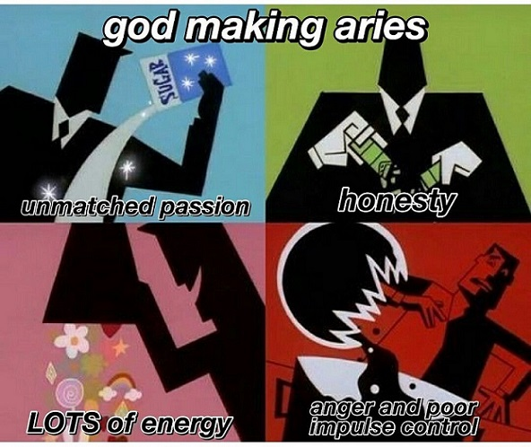

Symbol:The Ram
Element:Fire
Quality: Cardinal
Keyword:"I Am"
Ruling Planet:Mars
Strengths:Determined, Self Confident, Curious, Optimistic, Courageous
Weakness:Harsh, Moody, Short tempered, Impulsive, Impatient
As the first sign of the zodiac family, Aries tends to take on every task as a challenge and face them head on. Represented by the sign of the
Ram,they tend to be hard headed and short tempered. As the first sign they represent the children of the zodiac.
Aries people tend to have alot of energy, which they apply to everything from facing heavy projects to their high libidos. This sign is known
to leap before looking,diving into each new experience with a zest for life that few others can muster. As the zodiac’s first sign, they love
to be number-one and can be amazing trendsetters and trailblazers. With all of their fire power and can-do attitude, there’s nothing an Aries
can’t (and won’t) take on. At times,Aries can be selfish or overly focused on themselves. It can be a “blind spot” for them, and friends of
Aries may need to gently remind them from time to time to share their toys. This go-getter sign can come across as abrasive or overly aggressive.
However, Aries will never back down from a challenge and can be heroic champions of anyone in distress.
To understand an aries in its raw form you might want to visualize a mountain Ram. You don’t expect to be saluted for licked on the face with a
wagging tail when you stand in front of this animal.They have high egos and do not like anyone standing in their path. They tend to charge head
on towards these “obstacles” in their perspective.Ruled by mars they tend to be quite aggressive and stubborn in their ways. They can be very
mean or harsh while conversing and one must try and avoid conflicting with such individuals.
